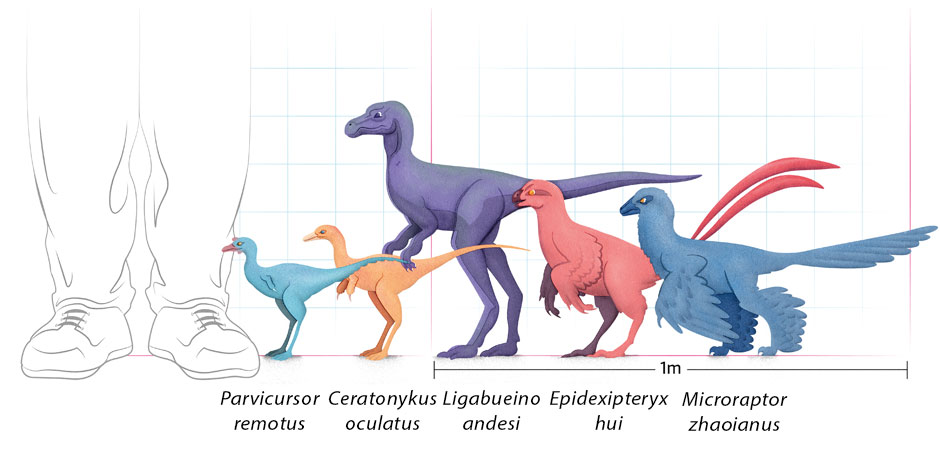

ABOUT LARGEST DINOSAUR
LARGEST DINOSAUR
The largest dinosaurs ever to exist belong to a group known as sauropods. These herbivorous long-necked, long-tailed reptiles include famous faces such as Dippy the Diplodocus and Brontosaurus.example
Here's a more detailed look:
Supersaurus:
supersaurus has a very long neck.
50-100 years of life
34-35m size.Supersaurus was a large, long-necked, herbivorous sauropod dinosaur that lived in North America during the Late Jurassic period. It was one of the longest dinosaurs ever discovered, potentially reaching over 40 meters in length, making it larger than even the blue whale.
Ultrasauros
Ultrasaurus was one of the largest dinosaurs, measuring up to 100 feet long. This immense herbivore roamed the earth during the Late Jurassic period.Ultrasaurus walked on all fours, with a long neck and tail for balance. Its diet primarily consisted of leaves and other high.ength of 25 to 30 meters (80 to 100 feet), a height of 8 meters (25 feet) at the shoulder, and a total height of 15 meters (50 feet)
Brachiosauros
Unlike carnivores and omnivores, Brachiosaurus didn't eat any meat at all and would not have fed on any other animals of its time. The Brachiosaurus diet consisted of gingko trees, coniferous trees (trees like pines or yews that have needles and cones) and cycads.
Argentinosauros
What did Argentinosaurus Eat? Argentinosaurus was an herbivore. This large sauropod had good teeth for grinding and chewing the tough plant material found in Cretaceous period Argentina.
Seismosauros
Seismosaurus was a quadruped, meaning that it stood and walked on all four legs. Its diet consisted of a wide variety of conifers, or evergreen trees, as well as other plants that included ginkgoes, cycads, horsetails, and ferns.
SMALLEST DINOSAUR
The smallest dinosaurs were remarkably tiny, some even comparable in size to modern birds. Microraptor, for example, was a feathered dinosaur from the Early Cretaceous period, measuring about two feet in length and weighing only a few pounds. Another small dinosaur, Anchiornis, lived about 160 million years ago and was about the size of a modern crow.

Microraptor:
This dinosaur had feathers on both its front and back limbs, long upper arm bones similar to birds, and a fan of feathers on its tail.
Anchiornis:
This small, bird-like dinosaur had a high tooth count and lacked an antorbital fenestra, making it a subject of scientific debate.
Oculudentavis:
Initially hailed as the smallest dinosaur, this amber-preserved fossil showed large eyes, numerous teeth, and a beak-like snout, but later research suggested it might be a lizard rather than a dinosaur.
Compsognathus:
This theropod dinosaur was known for its light build, long neck and tail, and strong hind limbs.
Mahakala:
A 2-foot-long dinosaur discovered in Mongolia's Gobi Desert.
Micropachycephalosaurus:
A small, thick-headed dinosaur that was likely a herbivore.